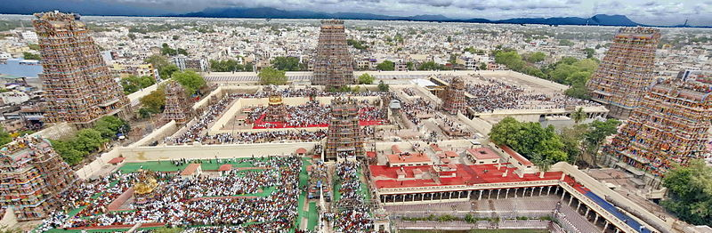

Temple
Arulmigu Meenakshi Sundareshwarar Temple is a historic Hindu temple located on the southern bank of the Vaigai River in the temple city of Madurai, Tamil Nadu, India. It is dedicated to the goddess Meenakshi, a form of Parvati, and her consort, Sundareshwar, a form of Shiva. The temple is at the center of the ancient temple city of Madurai mentioned in the Tamil Sangam literature, with the goddess temple mentioned in 6th-century-CE texts.This temple is one of the Paadal Petra Sthalam. The Paadal Petra sthalam are 275 temples of lord Shiva that are revered in the verses of Tamil Saiva Nayanars of 6th-9th century CE.The west tower (gopuram) of the temple is the model based on which the Tamil Nadu State Emblem is designed
History
The town of Madurai is ancient and one mentioned in Sangam era texts.These are dated to be from the 1st to 4th century CE.Some early Tamil texts call Madurai as Koodal, and these portray it as a capital and a temple town where every street radiated from the temple. Goddess Meenakshi is described as the divine ruler, who along with Shiva were the primary deities that the southern Tamil kingdoms such as the Pandya dynasty revered.The early texts imply that a temple existed in Madurai by the mid 6th century.In medieval literature and inscriptions, it is sometimes referred to as Kadambavanam (lit. "forest of Kadamba") or Velliambalam (lit. "silver hall" where Shiva danced). It was described to be the sangam of scholars, or a place where scholars meet. It is mentioned in the Tamil text Tiruvilayadalpuranam and the Sanskrit text Halasya Mahatmya.It is one of the shrines of the 275 Paadal Petra Sthalams. Early Tamil texts mention the temple and its primary deity by various epithets and names. Thirugnanasambandar, the famous Hindu saint of Saiva philosophy for example, mentioned this temple in the 7th century, and described the deity as Aalavai Iraivan.The origin of the temple is mentioned in these early Tamil texts, some in the regional Puranam genre of literature. All of these place the temple in ancient times and include a warrior goddess, but the details vary significantly and are inconsistent with each other. Some link to it deities they call Alavai Iraivan and Alavai Annal, or alternatively Angayar Kanni Ammai. Some link its legend to other deities such as Indra who proclaims the primacy of the goddess, while some describe Hindu gods appearing before ancient kings or saints urging wealthy merchants to build this temple in the honor of a goddess. One legend describes a childless king and queen performing yajna for a son, they get a daughter who inherits the kingdom, conquers the earth, meets Shiva ultimately, marries him, continues to rule from Madurai, and the temple memorializes those times. Instead of such inconsistent ahistorical mythologies, scholars have attempted to determine the history of the temple from inscriptions found in and outside Madurai, as well as comparing the records relating to South Indian dynasties. These largely post-date the 12th century.
Description
 The temple complex is the center of the old city of Madurai. It consists of monuments inside a number of concentric enclosures, each layer fortified with high masonry walls. The outer walls have four towering gateways, allowing devotees and pilgrims to enter the complex from all four directions. After the city's destruction in the 14th century, the Tamil tradition states that the king Vishwantha Nayaka rebuilt the temple and the Madurai city around it in accordance with the principles laid down in the Shilpa Shastras (Sanskrit: śilpa śāstra. The city plan is based on concentric squares with streets radiating out from the temple.[13] Early Tamil texts mention that the temple was the center of the city and the streets happened to be radiating out like a lotus and its petals. The temple prakarams (outer precincts of a temple) and streets accommodate an elaborate festival calendar in which processions circumambulate the temple complex. The vehicles used in the processions are progressively more massive the further they travel from the centre
Walls
The ancient temple complex was open. The courtyard walls were added over time in response to invasion and the plunder of the temple complex. According to the text Thirupanimalai, the Vijayanagara commander Kumara Kampana after completing his conquest of Madurai, rebuilt the pre-existing structure and built defensive walls around the temple in the 14th century. Lakana Nayakar added the defensive walls around the first prakara (courtyard), as well as expanded and renovated the Mahamandapa and Meenakshi shrine about the middle of the 15th century.
Gopurams
The shrines of Meenakshi temple are embedded inside three walled enclosures and each of these have four gateways, the outer tower growing larger and reaching higher to the corresponding inner one. The temple has 14 gopurams, the tallest of which is southern tower, rises to over 170 ft (52 m) and was rebuilt in the late 16th century. The oldest gopuram is the eastern one (I on plan), built by Maravarman Sundara Pandyan during 1216-1238.Each gopuram is a multi-storeyed structure, covered with sculpture painted in bright hues. The outer gopurams are high pyramidal tower serving as a landmark sign for arriving pilgrims, while the inner gopuram are smaller and serve as the entrance gateways to various shrines
Other mandapams
Deities inside the Temples
Worship
The Meenakshi Amman temple is an active house of Hindu worship. Priests perform the puja ceremonies on a daily basis and during festivals.[107] Volunteers and temple staff also participate in daily rituals, such as symbolically moving an icon of Sundaresvara in a palanquin to Meenakshi's chamber every night so that they can be together, then waking the two and returning Sundaresvara to his shrine every morning.[18] There are periodic ratha (chariot) processions where one of the metal copy icon of the goddess is taken out of the temple in an elaborate car shrine decorated with colorful clothes and flowers, with volunteers pulling the car through the streets of Madurai and circumambulating the temple complex on one of the concentric roads in the old city. This symbolizes her mythical conquests and her presence in the secular life of the people.Madurai temple ratha yatra festival (spring).Golu dolls festival (autumn).The temple has a six time pooja calendar everyday, each comprising four rituals namely abhisheka (sacred bath), alangaram (decoration), neivethanam (food offerings[note 3]) and deepa aradanai (lamp ceremony) for both Meenakshi and Sundareswarar. The rituals and festivals are accompanied with music with nadhaswaram (pipe instrument) and tavil (percussion instrument), recitation of the Vedas.The Hindus generally circumambulate the shrines clockwise first before entering the shrine for a darshana. Meenakshi is typically visited before Sundareswarar by the pilgrims, she considered the primary deity of the complex. Like most Shakti temples in Tamil Nadu, the Fridays during the Tamil months of Aadi (July–August) and Thai (January–February) are celebrated in the temple by thousands of devotees. "Avani Moola Utsavam" is a 10-day festival mainly devoted to Sundareswarar describes his various Thiruvilayadal meaning Shiva's sacred games.